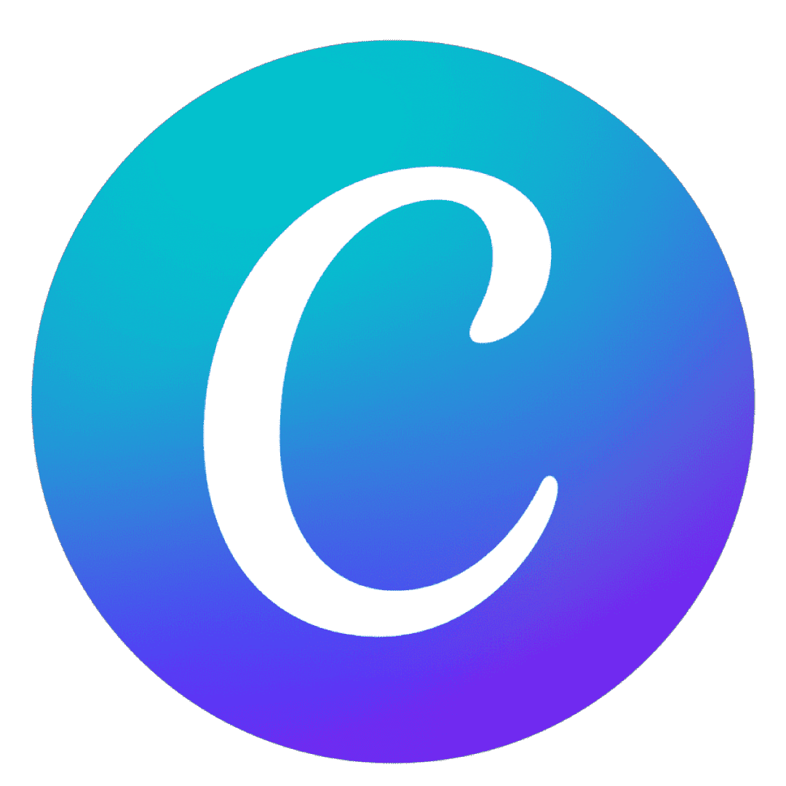
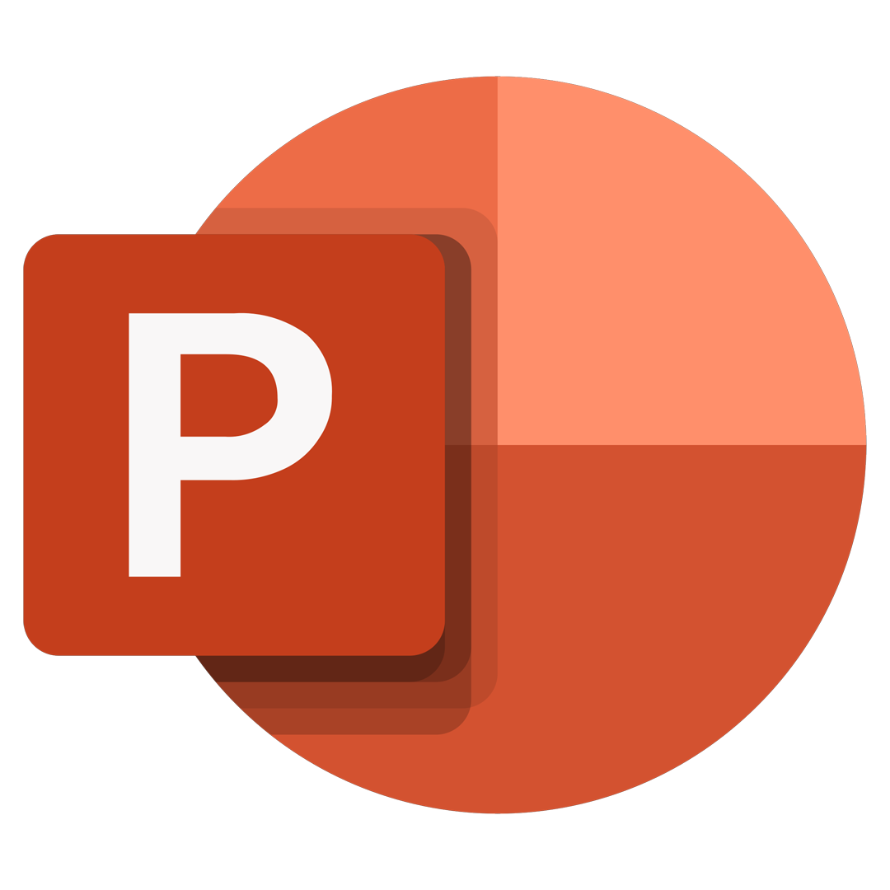
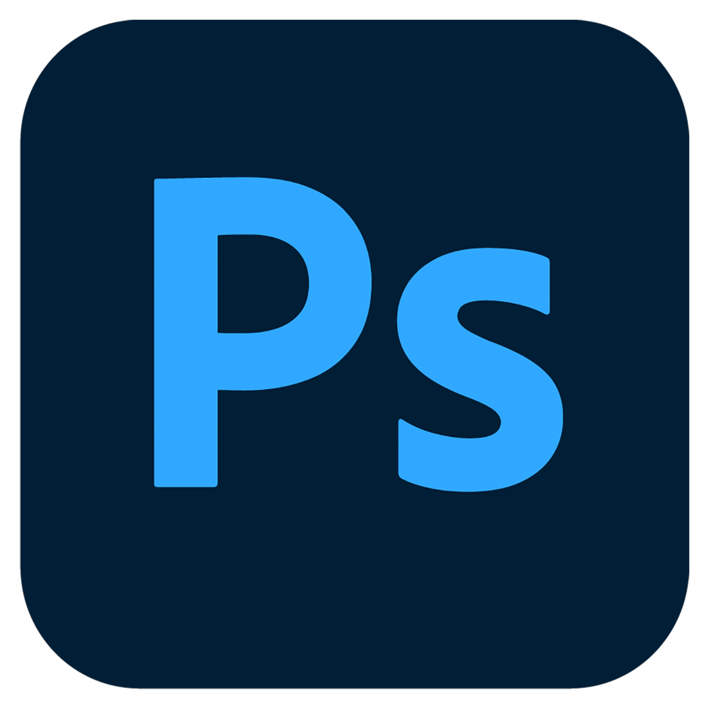
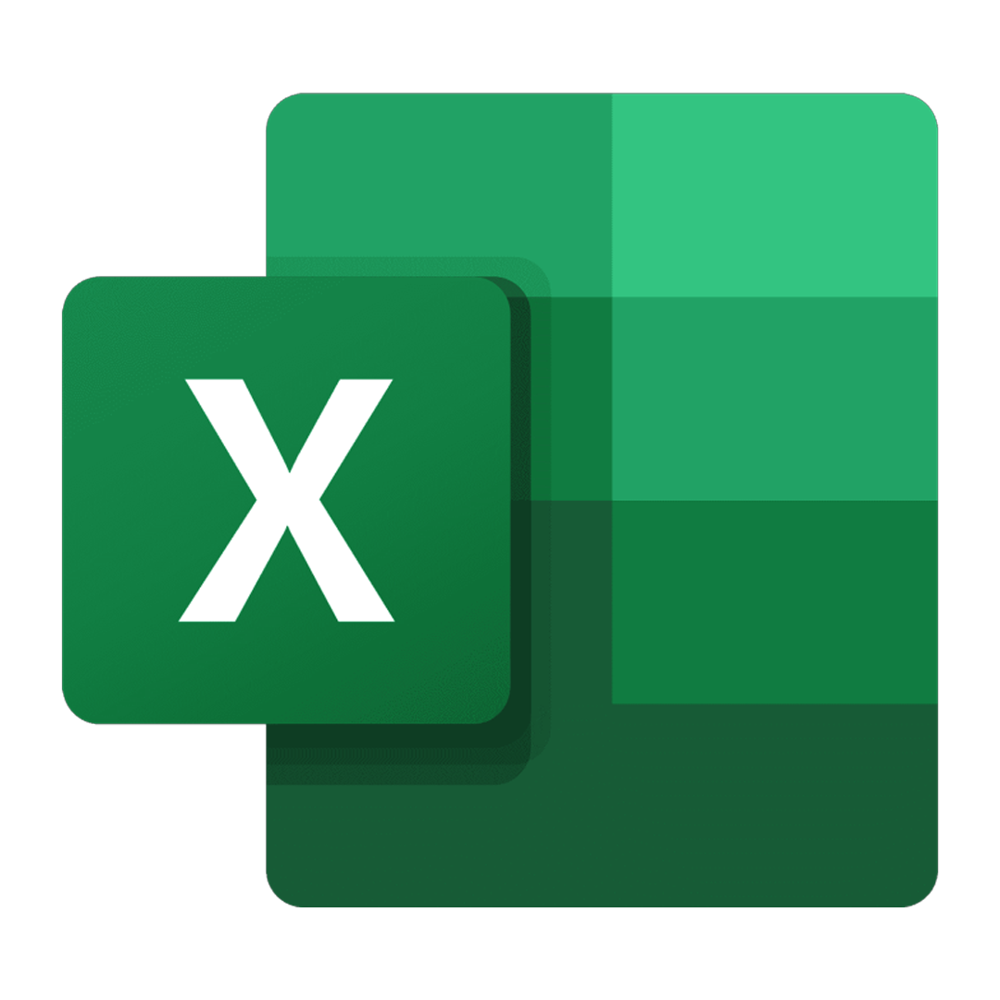
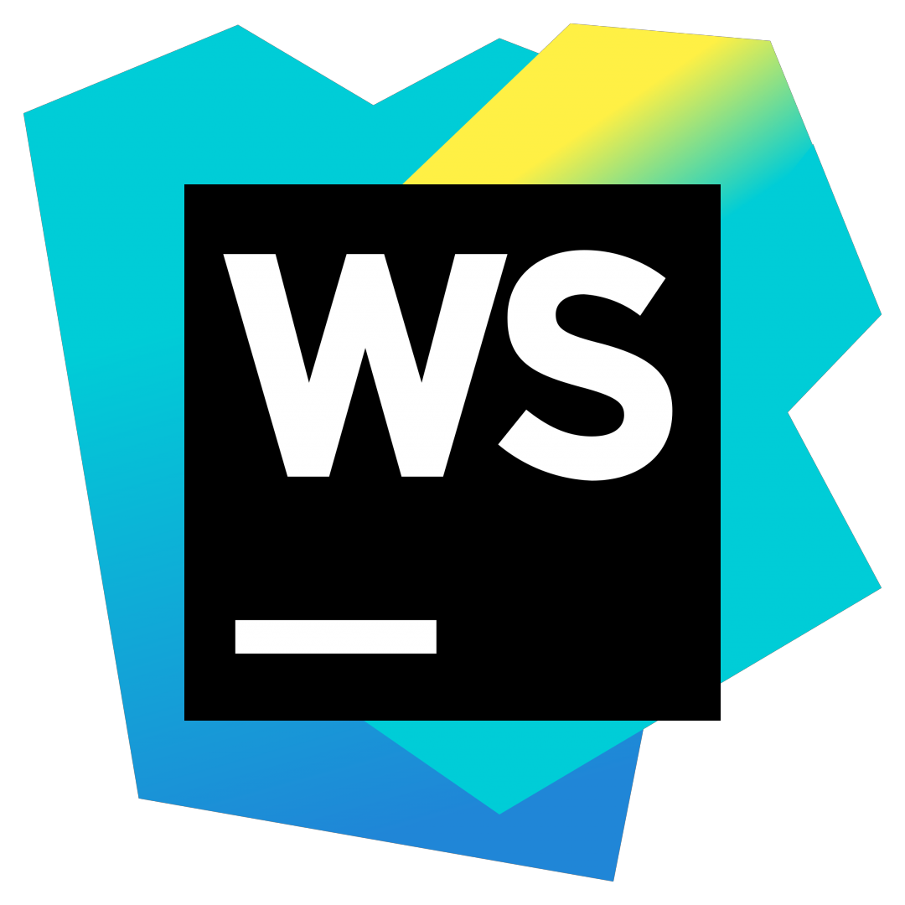
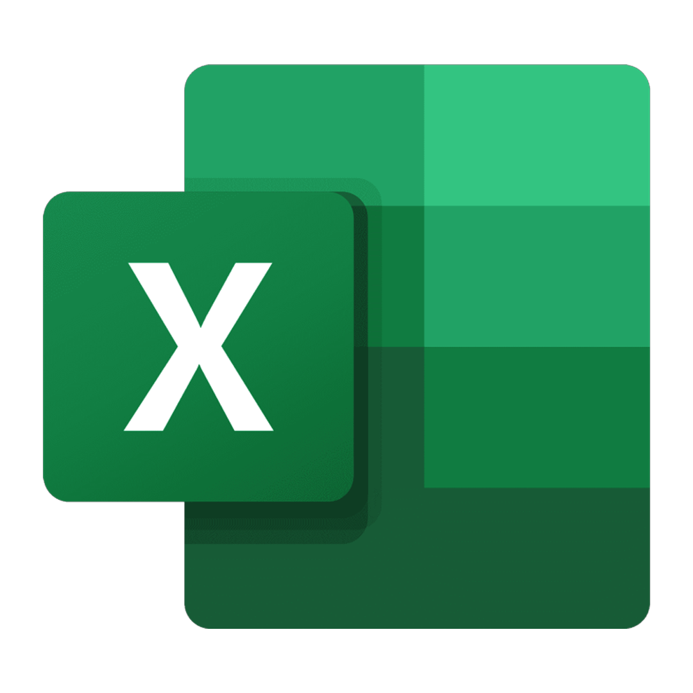
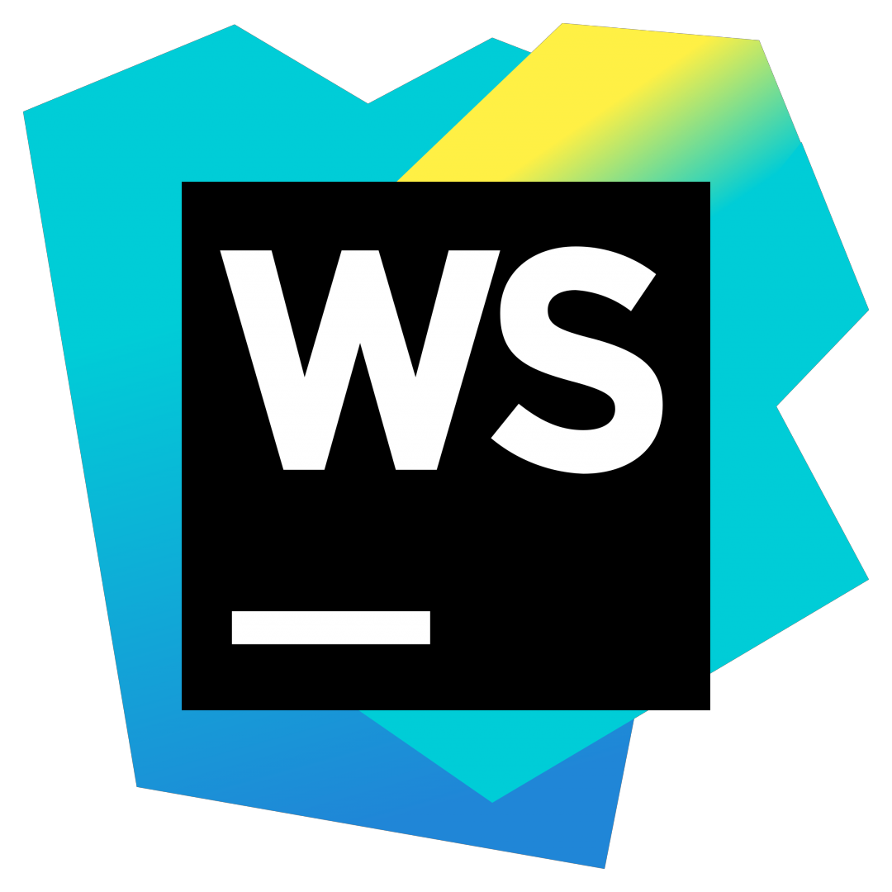
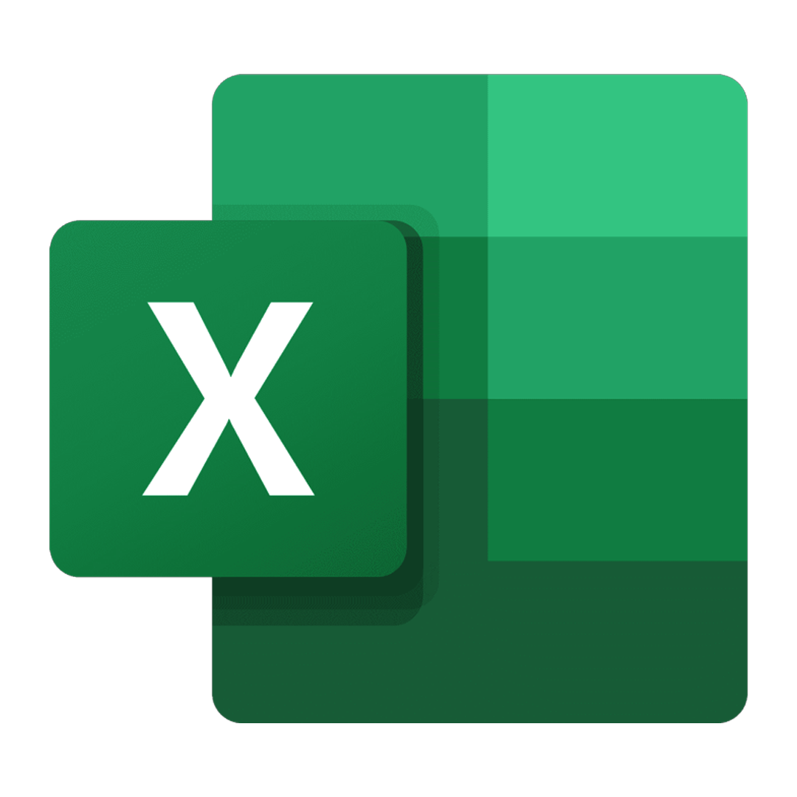
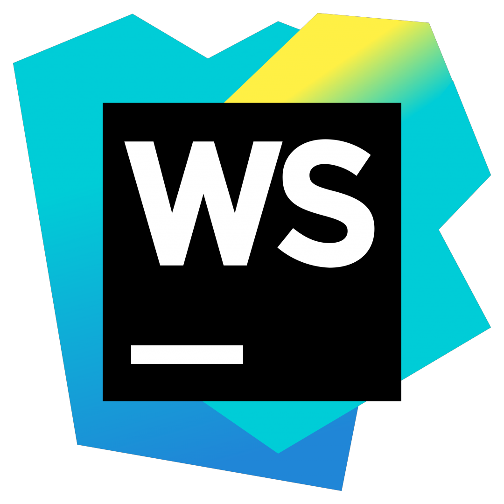

Portfolio
contacteer mij
Portfolio
Jesse Bergmans
Welkom in mijn persoonlijk portfolio, ik heb dit portfolio gemaakt om mij voor te stellen en mijn projecten te tonen. Ik ben momenteel 1ste jaars student aan de hogeschool PXL waar ik de richting van digitale vormgeving volg. Ik hoop met deze richting mijn creatieve ideeën te delen met anderen.
Mijn skills
Ik ben sterk in teamwerk en functioneer goed in sociale omgevingen. Door mijn flexibiliteit kan ik me snel aanpassen aan nieuwe situaties en uitdagingen. Creativiteit speelt een grote rol in mijn manier van werken, waarbij ik steeds op zoek ga naar originele en doordachte oplossingen. Daarnaast ben ik gedreven en gemotiveerd om mezelf continu te blijven ontwikkelen. Tot slot ben ik goed in presenteren en het duidelijk uitleggen van ideeën, zowel aan medestudenten als aan opdrachtgevers.
Software basiskennis



 





contact
gegevens
Tel: +32 0468 18 99 75
Instagram: jessebergmans
Discord: jesseb125
Mail: Jessebergmans123@gmail.com